Skip to content
← All field trips
New Mexico 2014 (ESCI 334)
15 photos
 Morrison Fm., Dakota Fm., Quaternary pediment deposits
Morrison Fm., Dakota Fm., Quaternary pediment deposits
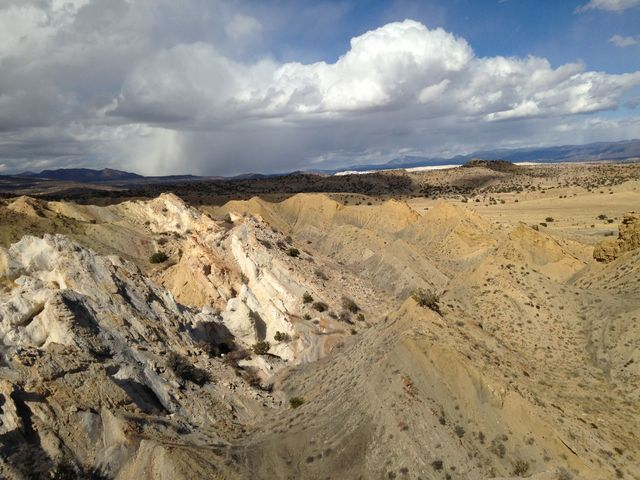
Jackpile Member of the Morrison Fm. and Dakota Fm.
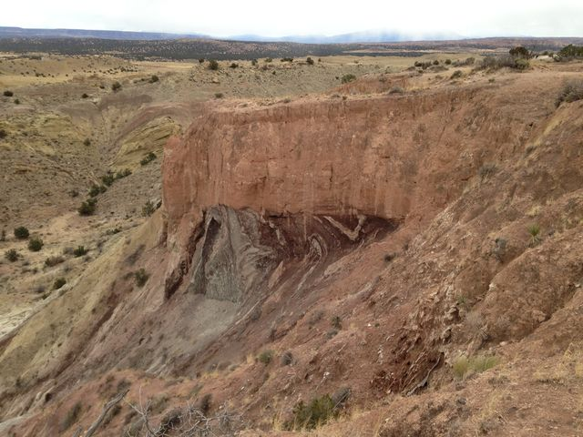
Intensely folded Summerville Fm. overlain by Quaternary pediment deposits
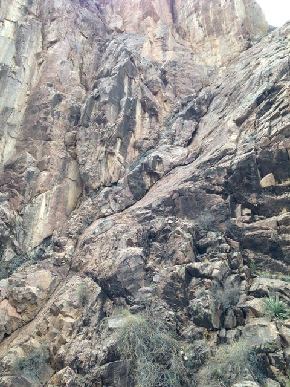
Fault in Precambrian gneiss (Box Canyon)
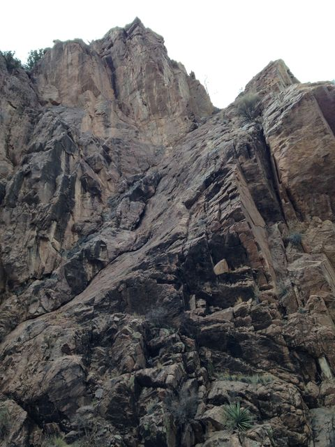
Fault in Precambrian gneiss (Box Canyon)
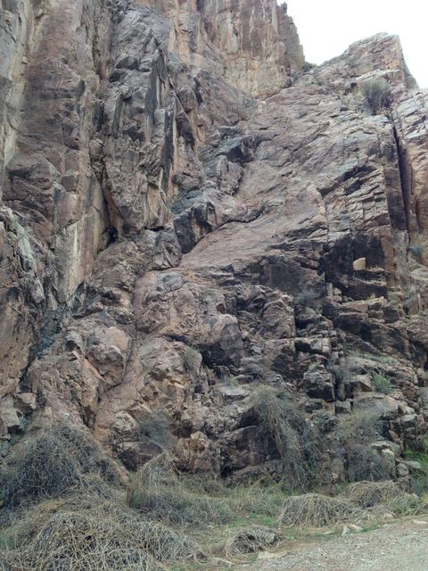
Fault in Precambrian gneiss (Box Canyon)
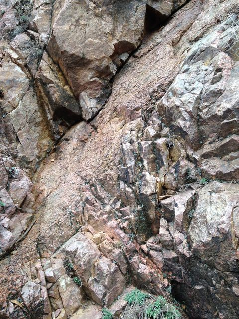
Fault gauge in Precambrian gneiss (Box Canyon)
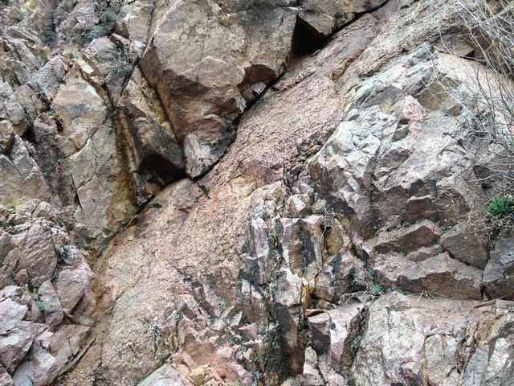
Fault gauge in Precambrian gneiss (Box Canyon)
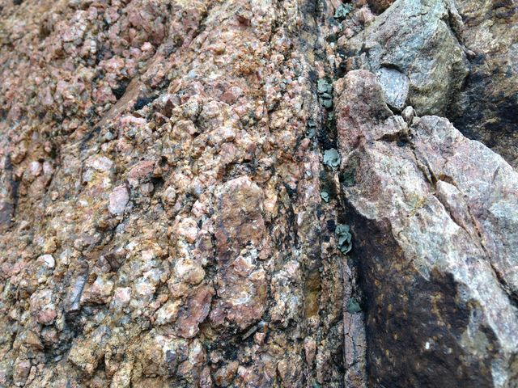
Fault gauge in Precambrian gneiss (Box Canyon)
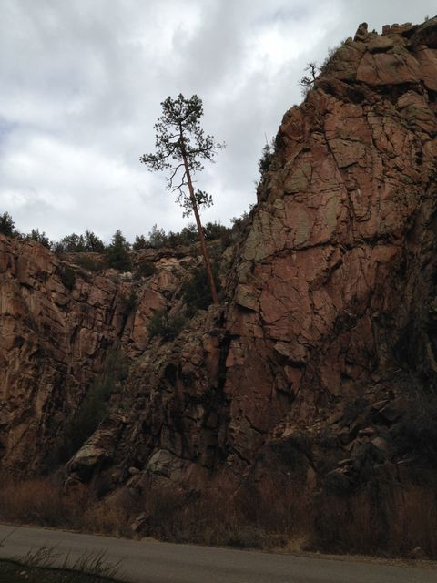
Tree on Precambrian gneiss (Box Canyon)
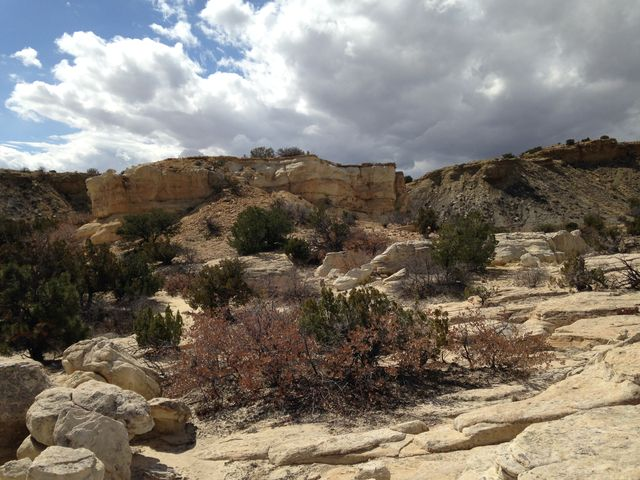
Jackpile Member of Morrison Fm. with Jurassic/Cretaceous unconformity on top
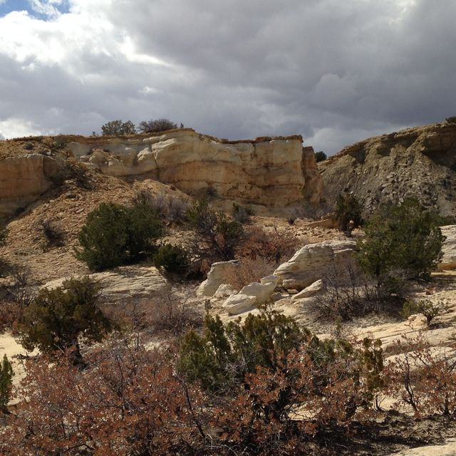
Jackpile Member of Morrison Fm. with Jurassic/Cretaceous unconformity on top
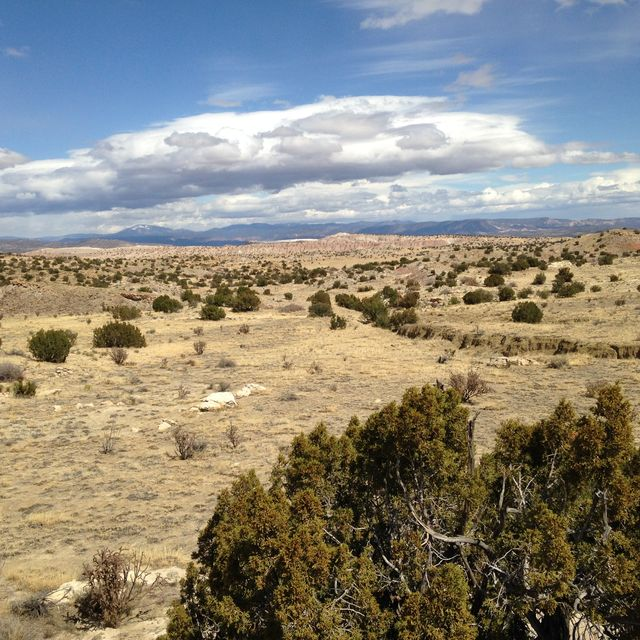
Looking northward
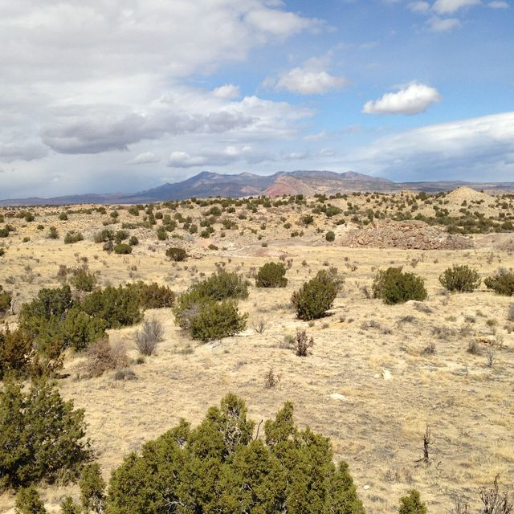
Sierra Nacimiento in distance
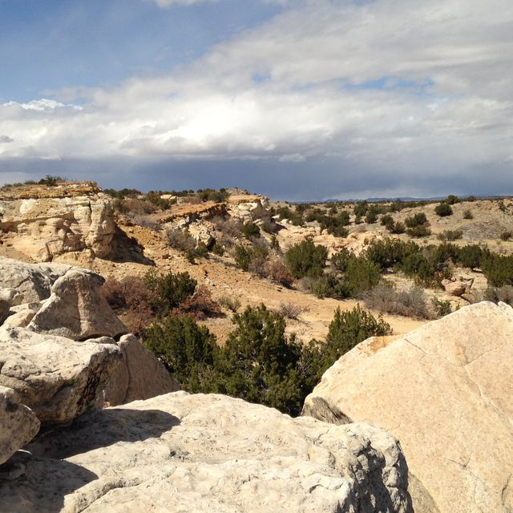
Jackpile sandstone (Morrison Fm.)